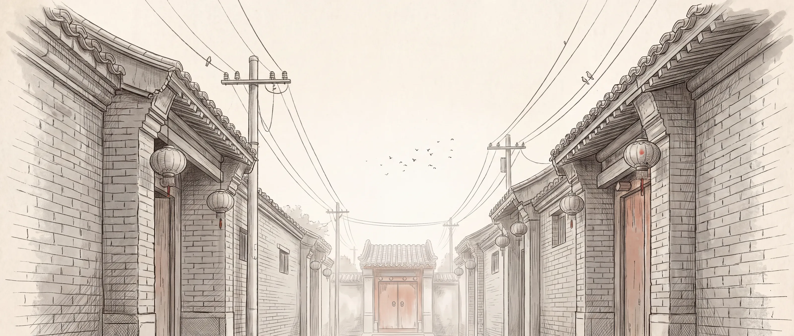
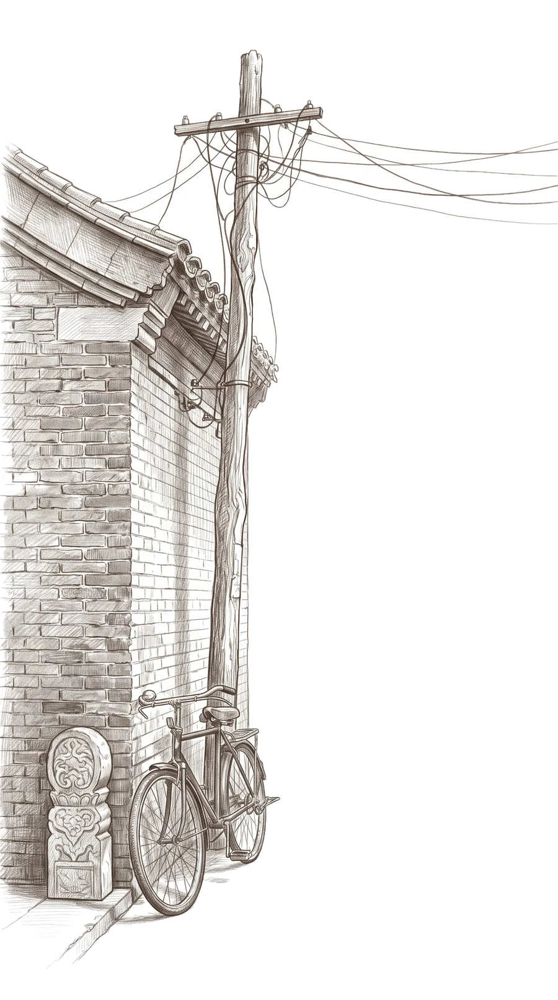
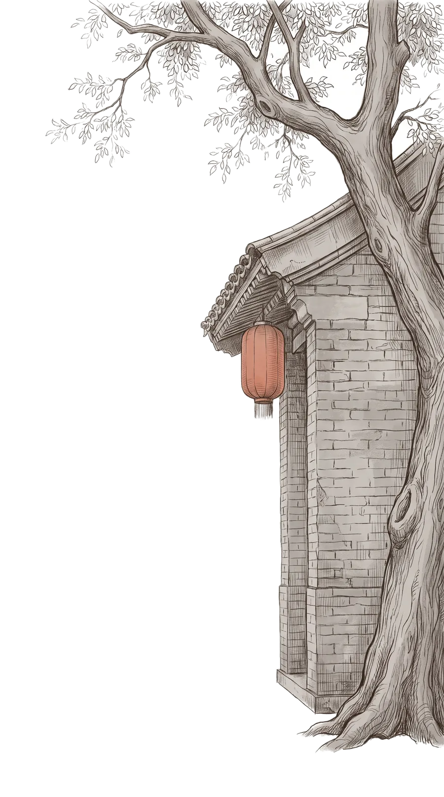

一日一巷
YI RI YI XIANG
胡同里的时间遗产
北京 · 胡同 · 非遗
05:30
拂晓 · 东城某胡同
天快亮了 · 往里走
滚动 / 点击
胡 同 搭 建 中
目
录
猴
鸢
谱
全 图
05:30
拂晓
向下滚动 · 让时间流动
重来
完成 · 盖印
离开
×
一日一巷 · 目录
一条胡同 · 一天时间 · 三项非遗 · 一块门牌
夜 深 了
你在这条胡同里，过完了一天
一日一巷
壹号
从清晨再走一遍
留在夜里